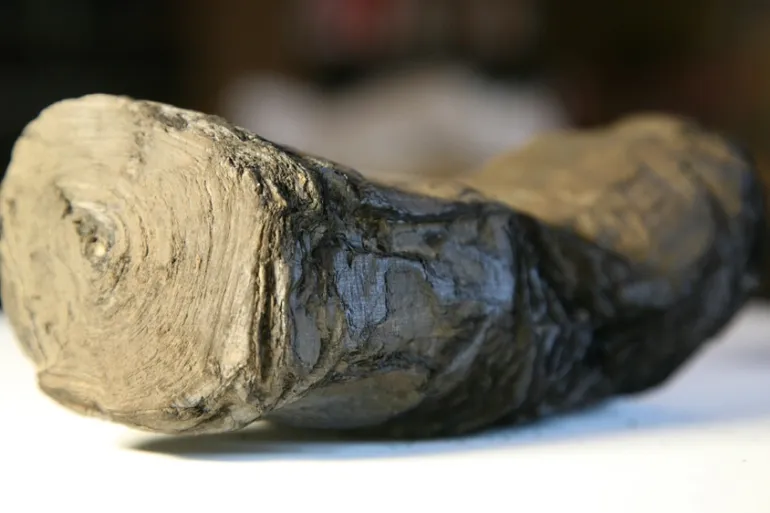
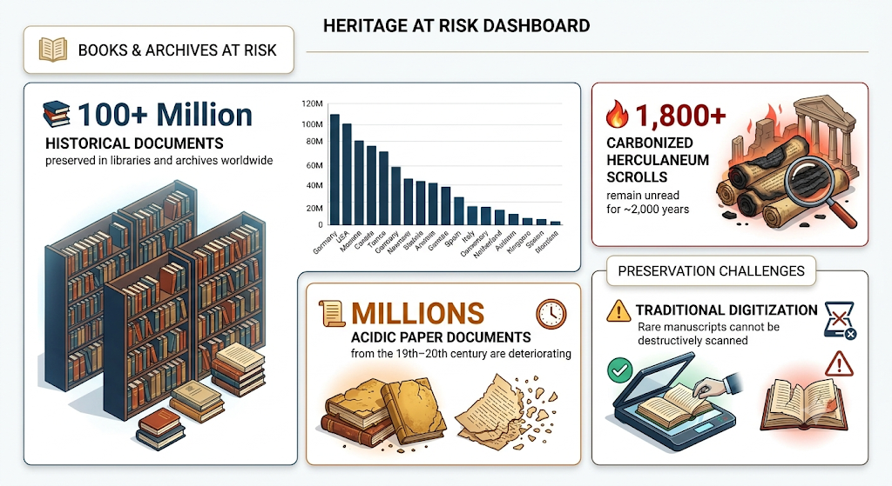
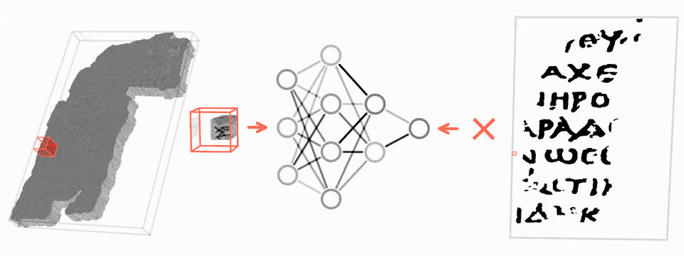
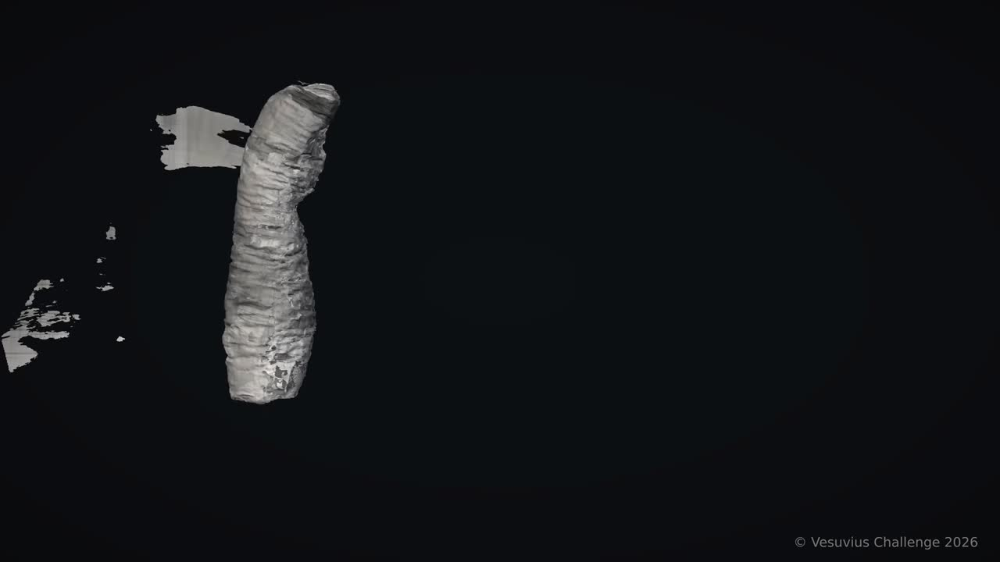

Fused layers
Neighbouring pages touch at sub-voxel distance, so a naive segmenter "jumps" from one sheet to the next.
PVG's College of Engineering, Technology & Management, Pune · AY 2026–27
An AI pipeline that takes a CT scan of a closed, fused or carbonised book or scroll, unfolds every page digitally, and recovers the hidden text, with a confidence score on every character.

Millions of bound books and rolled scrolls in the world's archives are fused, brittle or burnt. Opening them destroys them; leaving them closed leaves them unread. Micro-CT can see inside, but the raw result is a block of warped, touching layers in which the ink is almost invisible.

Neighbouring pages touch at sub-voxel distance, so a naive segmenter "jumps" from one sheet to the next.
Pages are crumpled 3D surfaces that must be unfolded without distorting letter shapes.
Carbon ink has almost the same X-ray density as the carbonised page, so no simple threshold works.
Recovered letters are broken. Any guess must be flagged as a guess, never presented as fact.
Select a module to see what it does, how, and how we will test it. Every module hands a documented file to the next, so any stage can be tested or swapped alone.


Five ideas carry the project. Each gives us either a physical explanation or a number we can check.
I = I₀ · e−μxHow X-rays fade through the artifact. This is the basis of ink-versus-page contrast.
P ∝ Zn / E³Metal-based ink (high Z) shows up clearly; carbon ink (low Z) does not. That is the core difficulty.
E = Σ wᵢ ‖(pᵢ−pⱼ) − Rᵢ(pᵢ⁰−pⱼ⁰)‖²Unfolds a curved page to a flat one with minimal stretch and shear, so letters keep their shape.
2|A∩B| / (|A|+|B|)Measures how well our page segmentation overlaps the expert annotation. The gate is above 0.90.
log P(tokenₜ | context)A per-character confidence. Low-scoring characters are highlighted for a human to review.
FastSAM3D and a 3D U-Net for segmentation, 3D CNN and TimeSformer for ink, CRNN with CTC for reading, an Ithaca-style language model for gap filling.
| Criterion | Spine-cutting / flatbed | ThaumatoAnakalyptor | Generic 2D SAM + OCR | This project |
|---|---|---|---|---|
| Artifact safety | Destroys binding | Non-destructive | Not applicable | Non-destructive |
| Artifacts handled | Books, after cutting | Rolled scrolls only | Flat 2D images | Bound books and scrolls |
| Automation | Manual, page by page | Semi-manual | Partial | End-to-end pipeline |
| Confidence reporting | None | Limited | Binary error rate | Per-character score |
| Reuse elsewhere | None | Scroll-specific | Not volumetric | Modular: medical, NDT, PCB |
Every requirement has a test. Phase 1 tests run on synthetic CT data; benchmark tests on real scroll data begin once segmentation passes its gate.
| ID | Requirement | What is tested | Data | Pass criterion | Status |
|---|
Dice / IoU above 0.90 on continuous sheet tracking, with zero cross-layer merges on a 40 µm gap phantom.
Character and word error rates against benchmark transcriptions, plus a log-likelihood for every token.
100% of sub-threshold characters must be visibly flagged in the interface. Nothing uncertain is shown as certain.
A fixed 12-month schedule in four phases, with a milestone gate at the end of each. Hover or tap a phase for its deliverables.
Internal guide: Prof. Ravindra Mule · Department of Artificial Intelligence & Data Science, PVG's COET&M, Pune
The report covers requirements, architecture, algorithms, test plan, cost and references.